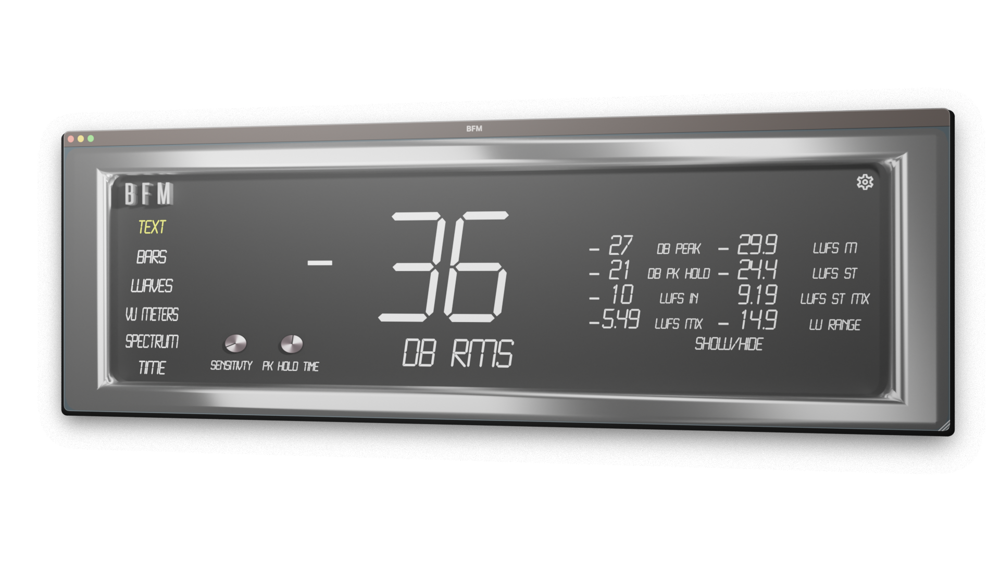
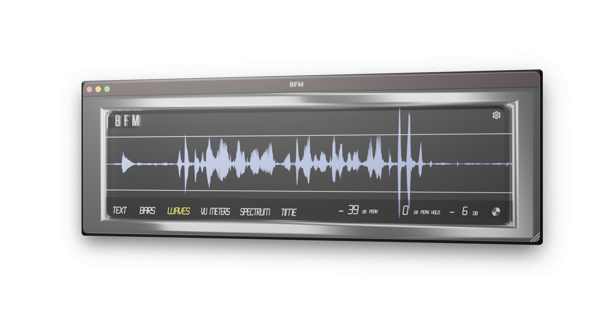
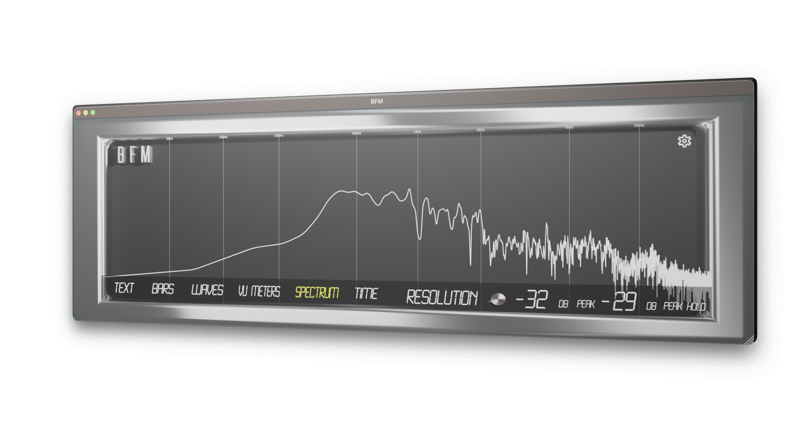

BFM or Big F*ing Meters is a macOS, Windows, and iOS compatible Metering plug-in designed exactly how the name sounds... really f*ing big. With the main goal of readability, we wanted to bring a meter that you can see from across the studio and keep your records clip-free.
BFM currently offers 6 Modes with RMS, LUFs, Peak, and Peak Hold values, to give you a variety of views to keep your signal under control. The Text, Bars, Waves, VU Meters, Spectrum, & Time let you decide how you want to keep track of your signal with multiple fonts/formats to view them in.
Text gives you a quick look at just the values easy to see from across the room. This view offers the most values with RMS, Peak, Peak Hold, and LUFs (Short Term & Momentary with Maximum values and LUFS range) values available. Controllable sensitivity & peak hold time for all pages. Reset Peak Hold with a click off the value.
Bar offers a more traditional meter better for seeing the range of values showing RMS, Peak, Peak Hold, and LUFS. Correlation & Balance meters included to set your stereo image and phase response. Peak Hold resets on value click. Sensitivity changes on bar click. LUFS readings select on click. Included reference points for -24 (EBU), -16 (Apple Music), & -7 as a suggested maximum for all genres.
Wave view gives you a look at your waveform after your channel effects with the ability to quickly mark in dB where you want to see your signals peak. To freeze click the waveform. To reset Peak Hold click the value.
VU Meter Designed for a quick look at your overall levels. Featuring controllable Attack, Release, Minimum, and Maximum value control. Left/Right, Mid/Side, PPM, and LUFS options available. Click VU to enter dark mode.
Spectrum is a simplified frequency spectrum view with 3 quality modes. Great for getting an overall look at where your frequencies are when mixing or editing. Tap to freeze and inspect. There is also the PEAK value displayed on this page. To reset Peak Hold click the value.
Time designed for quickly viewing all project time-related information. Includes SMPTE, BPM, Time Signature, current Bar/Beat, and current sample rate. Click to freeze and remember where you were.